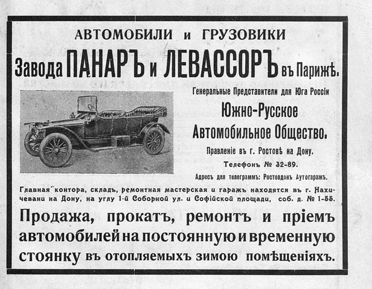

Лист источника 5
Скан

Распознанный текст
АВТОМОБИЛИ и ГРУЗОВИКИ
Завода ПАНАРЪ и ЛЕВАССОРЪ въ Парижѣ.
Генеральные Представители для Юга Россіи
Южно-Русское
Автомобильное Общество.
Правленіе въ г. Ростовѣ на Дону.
Телефонъ № 32-89.
Адресъ для телеграммъ: Ростовдонъ Аутогаражъ.
Главная контора, складъ, ремонтная мастерская и гаражъ находятся въ г. Нахи-
чевани на Дону, на углу 1-й Соборной ул. и Софійской площади, соб. д. № 1-55.
Продажа, прокатъ, ремонтъ и пріемъ
автомобилей на постоянную и временную
стоянку въ отопляемыхъ зимою помѣщеніяхъ.